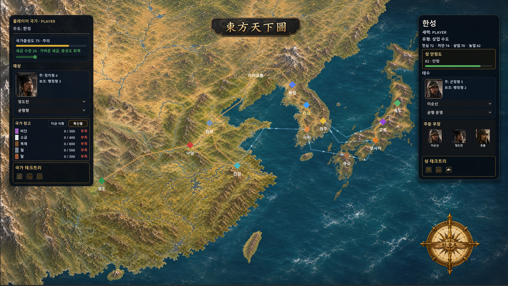
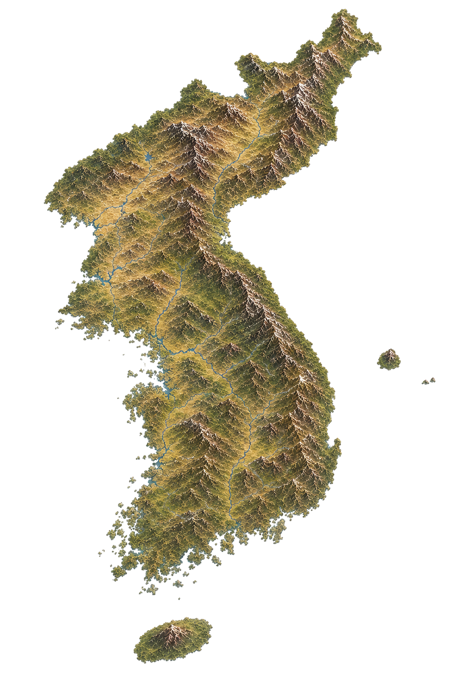
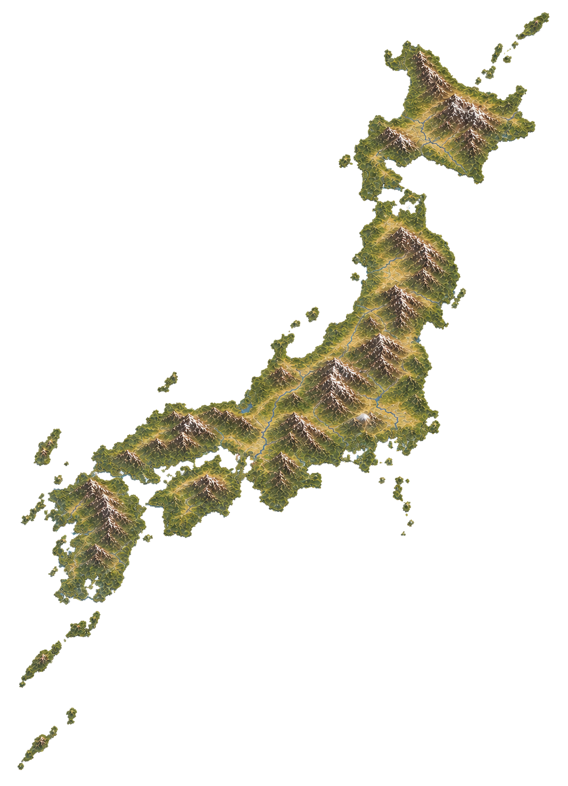
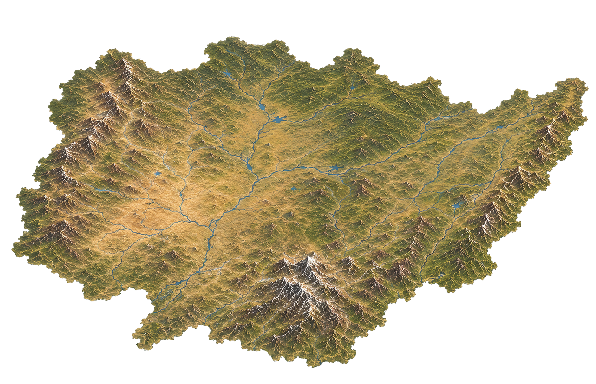
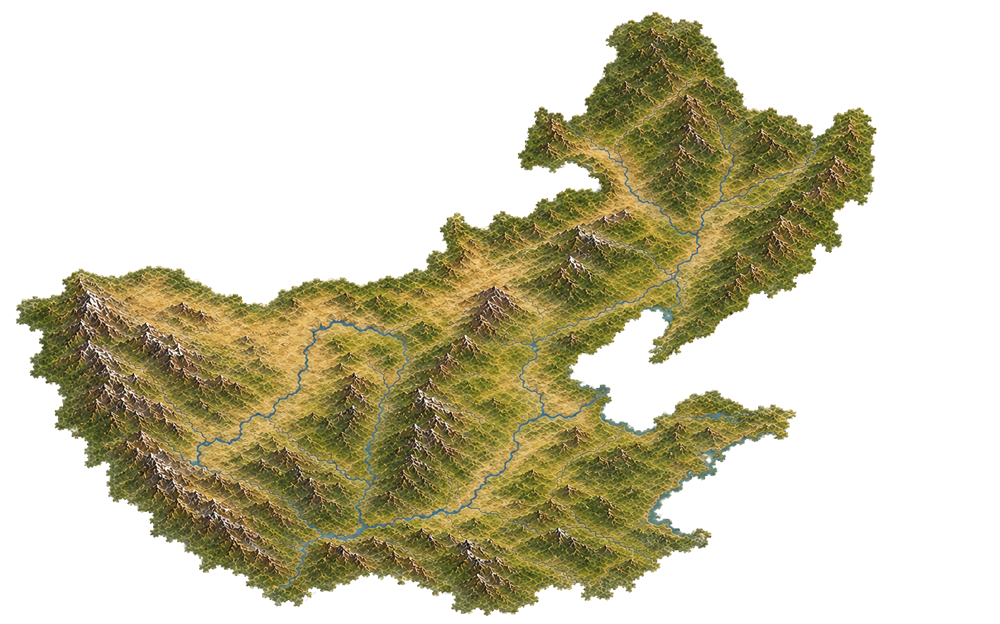
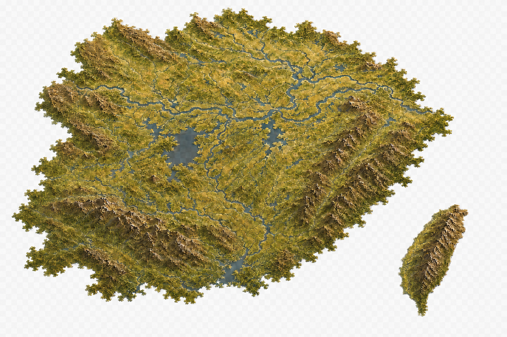
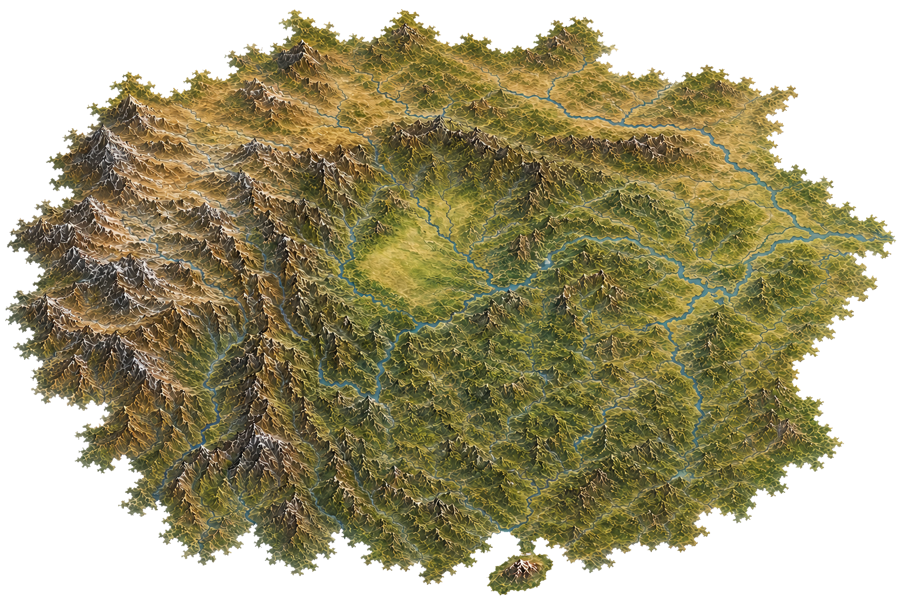
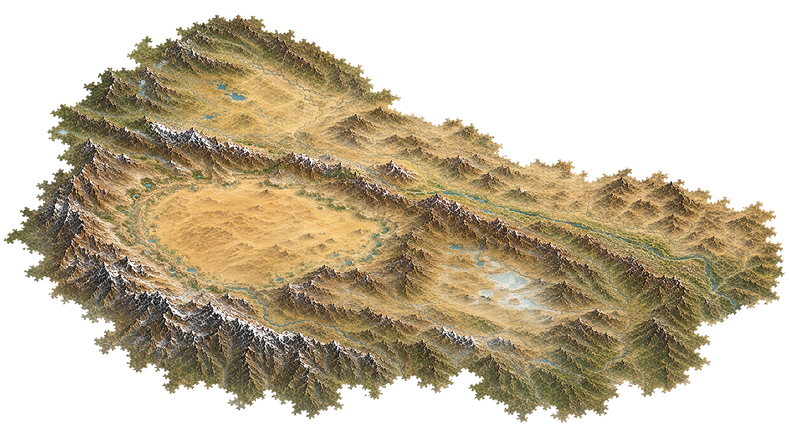
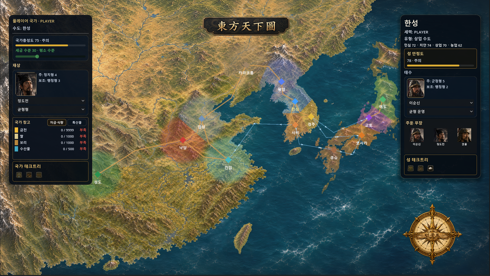

얼굴을 두 번째로 바꾸다
월드맵 2번째 디자인 교체 작업과 영역 표시 넣기
2026년 08월 27일배경부터 바꿨다
1차 디자인이 자리를 잡은 다음, 월드맵의 배경 지도 자체를 새로 교체하는 작업이 이어졌다. 이번 단계의 목표는 딱 하나였다 — 새 전체 배경 이미지를 4096×2304 기준으로 확정하고, 이걸 4분할해서 WorldMap_UI_Test에서만 기존 배경 텍스처를 교체해보는 것. 기존 UI 오버레이는 손대지 않고, 클릭·마커·정보창 가독성이 새 배경 위에서도 그대로 유지되는지만 먼저 확인하는, 순수 "월드맵 아트 퀄 검증 테스트"였다.
새 이미지가 도착한 뒤엔 기존 1차안 방식을 그대로 유지했다. 4096×2304 이미지를 런타임에서 좌상·우상·좌하·우하 4개의 2048×1152 영역으로 잘라 0.5배로 배치하는 테스트 전용 컨트롤러를 새로 붙였다. 이 컨트롤러는 새 배경 파일만 사용하고, 기존 배경 시스템이나 Production 코드는 전혀 건드리지 않았다 — 테스트 씬에는 새 컨트롤러 하나만 추가됐을 뿐, 기존 Production 월드맵, 좌우 정보창, 창고·테크·가독성 컨트롤러, Stable HUD, 턴 전환 가드는 전부 그대로 유지됐다.

땅에 색이 스미다
배경이 자리 잡은 다음은 영토 표시였다. 개념은 단순했다 — 2048×1152 월드 위에 반투명 영토 레이어를 하나 깔고, 각 픽셀마다 "13개 도시 중에 나랑 제일 가까운 도시가 어디지"를 계산해서 그 도시의 현재 세력색으로 칠하는 방식(최근접점 방식)이다.
하지만 이대로만 하면 문제가 생긴다. 중국처럼 도시 4개가 대륙 하나를 통째로 나눠 먹는 것처럼 보이는 이상한 그림이 나온다. 그래서 규칙을 하나 더 얹었다 — 도시 반경 80px 안쪽만 색칠하고 그 바깥은 원래 지형색 그대로 두는 것(30px 페이드로 경계는 부드럽게). 이러면 도시가 촘촘한 한반도·일본은 자연스럽게 이어진 영토처럼 보이고, 도시가 뜨문뜨문한 중국은 도시별로 동그란 세력권처럼 보인다.
바다는 무조건 제외했다. 육지/바다 흑백 마스크를 따로 만들어서 흰 부분(육지)에만 색이 입혀지고, 검은 부분(바다)은 절대 칠해지지 않게 막았다. 색의 농도도 신경 썼다 — 계산된 세력색을 100% 진하게 칠하면 산맥·강 텍스처가 다 가려져서 스티커를 붙인 것처럼 보이기 때문에, 35%만 반영해서 지형 위에 얇게 "물든" 느낌만 나게 했다.
핵심은 이 네 가지 규칙(최근접 도시·반경 제한·바다 차단·35% 투명도)을 전부 그림으로 미리 그려서 저장하는 게 아니라, 게임이 매 프레임 실시간으로 계산하게 만들었다는 것이다. 그래서 나중에 도시가 4개에서 50개로 늘어나도 폴리곤을 다시 그릴 필요 없이, 반경 숫자 하나만 조정하면 자동으로 다 맞춰진다.
구현 쪽에서도 원래 지시했던 것보다 한 단계 더 깔끔한 방식으로 갔다. 처음엔 "CITY_POSITIONS 상수를 그대로 재사용하라"고 지시했는데, 실제로는 CityLayer의 실제 마커 노드에서 position과 owner_faction_id를 런타임에 직접 읽어오는 방식으로 구현됐다. 좌표 리스트를 셰이더 쪽에 또 하나 하드코딩하는 대신, 데이터 원본을 하나로 유지한 것이다. 이러면 나중에 마커 위치가 조정되거나 소유권이 바뀌어도 영토 셰이더가 자동으로 따라간다. 도시 배열도 13개 고정이 아니라 MAX_CITIES 64 + city_count 구조로 만들어서, 도시가 늘어나도 코드를 갈아엎을 필요가 없게 미리 여지를 남겨뒀다.
이번 작업에 쓰인 지형 원본들은 지역별로 따로 준비된 투명 배경 에셋이었다. 한반도, 일본 열도, 만주, 중국 4분할(화북·산둥, 강남·대만, 서남·하이난, 서북)까지, 각 지역이 개별 조각으로 존재하다가 하나의 대륙 지도로 합쳐진다.







완성된 두 번째 얼굴
배경 교체와 영토 셰이더가 모두 자리 잡은 결과가 이것이다.

한성 주변으로 은은한 파란색 영향권이 원형으로 번지고, 평양·경주·사비도 각자의 색으로 물들어 있다. 오사카와 교토 쪽 일본 지역도 마찬가지로, 도시가 촘촘한 지역은 영역이 자연스럽게 이어지고 먼 지역은 원래 지형색이 그대로 남는다. 정상이면 각 성 주변 육지만 세력색으로 은은하게 칠해지고, 도시 사이 먼 지역은 무채색 지형이 남고, 바다는 전혀 색칠되지 않아야 한다는 목표 그대로 나왔다.
앞으로
배경 지도와 영토 표시가 자리 잡으면서 월드맵이 두 번째 얼굴을 갖게 됐다. 다음은 이 영토 시스템을 실제 소유권 변경(침공·점령)과 연동해서, 전쟁 결과가 곧바로 지도 위 색깔 변화로 보이게 만드는 작업이 남아 있다.